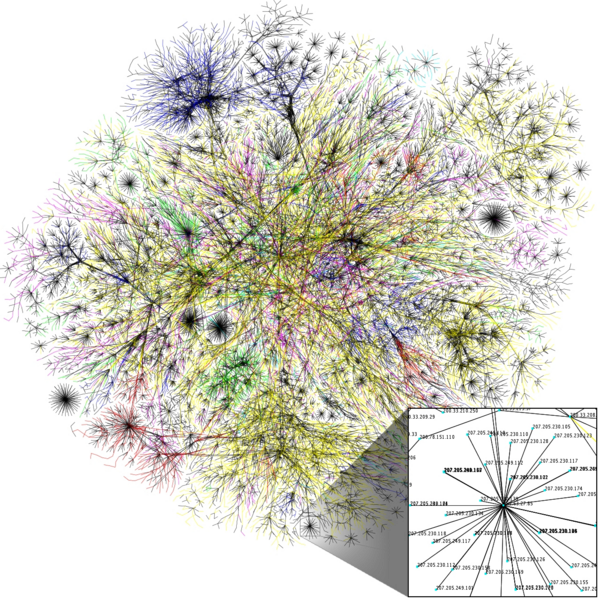
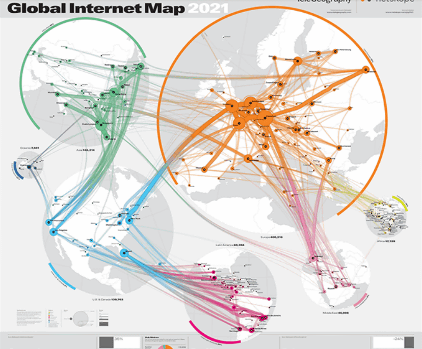
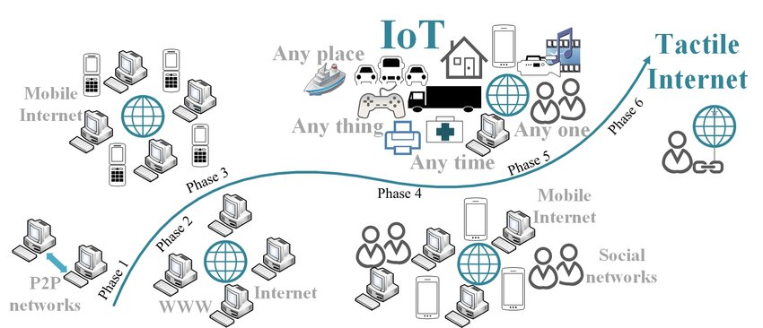

Internet
Created: 1969 (ARPANET)
Available: Worldwide
Users: 4.66 billion (2021)
The History of the Internet
The Internet is the global system of interconnected computer networks that uses the Internet protocol suite (TCP/IP) to communicate between networks and devices. It is a network of networks that consists of private, public, academic, business, and government networks of local to global scope, linked by a broad array of electronic, wireless, and optical networking technologies.
History
The Internet has its origins in ARPANET, developed by the United States Department of Defense in the 1960s. Initially designed for military communications, ARPANET evolved to become the foundation of the modern Internet.
Global Impact
The Internet has transformed virtually every aspect of modern life, including communication, commerce, education, and entertainment. It has enabled the emergence of new forms of social interaction, such as social networking and global instant communication.
Expansion and Accessibility
With the advent of technologies such as smartphones and 5G networks, Internet access has become increasingly ubiquitous. This has led to a digital revolution on a global scale, affecting economies, cultures, and societies worldwide.